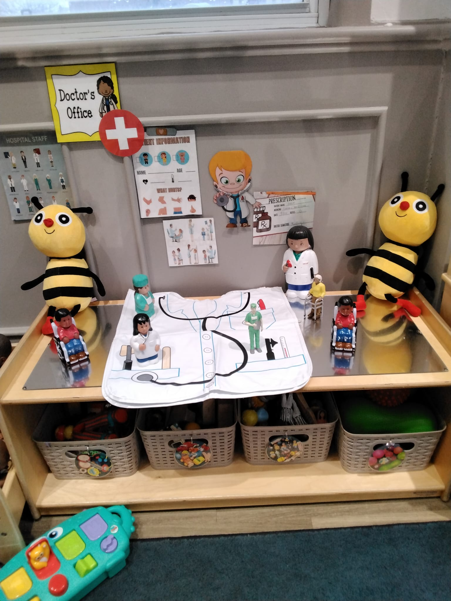
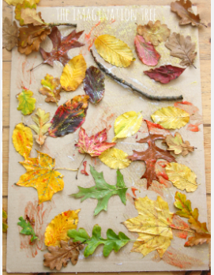
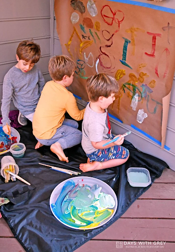
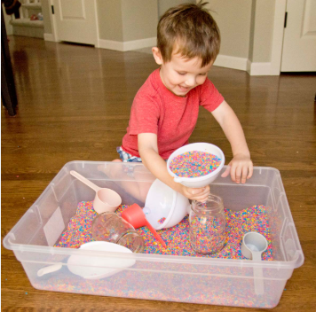
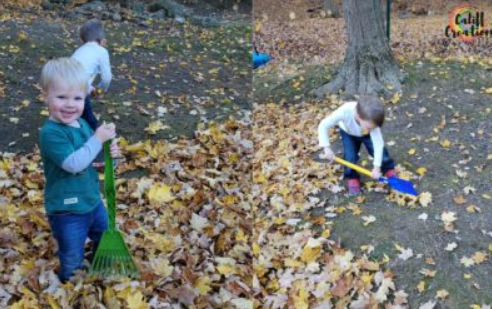

A Professional Collection of Early Childhood Education Resources
Songs, Stories, and Dramatic Play Activities for Children
Engaging musical experiences and movement activities that support child development, creativity, and physical literacy.
Video Recording
Music Resources
A collection of storytelling resources, literature activities, and documentation that foster a love of reading and language development.
Video Recording
Resource List
Rationale: This storybook is often used at bedtime, using rhythmic and repetitive sounds to allow the children to go into a state of calm and help them build language skills in their early stages. The book uses familiar settings and vocabulary that soothe, allowing them to transition well into bedtime.
Rationale: This book is used to engage children with the visuals it has placed. The illustrations have bright images and use pages that allow the children to interact and give back rather than simply read. This book works to support learning; it helps them build their skills of counting, sequencing, and learning basic science that is adaptable to their age and also supports language development.
Rationale: This book can collect images, uses colours, and brings the knowledge of animals, patterns, and things used at the early stages of development in helping the children take in basic information. The text is simple, and the factor of participation it adds allows the children to read aloud and engage with the book.
Rationale: This is a different book from the rest; it is a sensory-based book. Through this, the children cannot only read but also physically engage in the book by feeling the texture, and it allows them to be captivated. The skills used are fine motor skills, and they create a bridge to help them develop early literacy experiences.
Rationale: This is a book that engages the children and allows them to interact using various motions, and makes reading fun. The curiosity that is driven through this helps the children develop. The guessing aspect of this allows participation and helps the children adapt to grow their comprehension skills.
Imaginative play spaces and resources that encourage creativity, social development, and collaborative learning through role-play.
Photo Documentation

The setup above, which I had prepared for my class, illustrates the dramatic play scene designed to represent the doctor's office environment. In this, the children can set roles such as those of a doctor, nurse, and patient. and they have used props such as toy stethoscopes, injections, and notepads. Through this, the children were able to use their imagination to enact scenes from a doctor's office. Through this, we get to explore the development of emotional building, creating dialogue and building social interactions based on real life. The organized material setup also allows for a larger, meaningful way to engage the children and aid their process of imagination.
Resource List
External Links
Pocket of Preschool - News/Weather Station Dramatic PlayExploring creative expression through various art mediums and techniques that foster imagination, fine motor skills, and self-discovery.
Process-Focused Activity
Materials:
Learning Outcomes:
Children were allowed to use various tools at their disposal and were given the freedom to make whatever they pleased. This is a play-based activity with a direct child-centred approach that focuses on creativity and experimentation.
Documentation

The children selected natural materials and placed them using their imaginations; to what they found creative, they created a unique collage. Through this, they showcase independence, creativity, and decision-making. These are loose parts, and these are what children use to enhance their creativity and bring about artistic pieces. They bring about open-ended creativity that helps enhance the imagination of a child.
Creative Play

Children reuse materials that they use, which can be built into various things, not limited only to the initial purpose. This activity promotes adaptation for different age groups: Toddlers (2–3) can engage in finger painting instead of brushes with fewer materials, Preschoolers (3–5) can introduce tools like sponges and rollers with encouragement for colour mixing, and School-age children (6+) can add themes or storytelling elements to their art.
Tactile and sensory-rich activities that engage multiple senses, promote fine motor development, and encourage exploration through natural materials.
Sensory Activity
Materials:
Learning Outcomes:
The use of the rainbow rice box is to use tactile exploration; the children can move around, touch, and see various colours, providing a calming and engaging sensory experience.
Activity Photo

Using a sensory bin allows movement and children to learn to play with volume, enhancing their fine motor skills. Through this engagement, the learning is occurring. Children can explore different textures, develop hand-eye coordination, and build confidence in their manipulative abilities.
Resource Guide
Why important: Supports sustainability and sensory diversity.
Adaptations for Diverse Needs: Use larger tools for motor challenges, provide gloves for sensory sensitivity, and reduce noise and stimulation as needed.
Nature-based activities that encourage outdoor exploration, physical activity, and meaningful connections with the natural environment.
Outdoor Exploration
Materials:
Learning Outcomes:
Activity Photo

Children, through outdoor play, are seen to be collecting leaves using the tools given to them. This open-ended activity is set to help them explore nature, develop curiosity about the natural world, and build an appreciation for outdoor environments. The activity promotes fine motor practice while engaging in meaningful exploration.
External Links
Outdoor Play Canada - Benefits of Outdoor PlayConnect with resources and community support for outdoor play initiatives in Canada. Discover the benefits of outdoor play for child development and wellbeing.
Brown, M. W. (1947). Goodnight moon. Harper & Brothers.
Campbell, R. (1982). Dear zoo. Little Simon.
Carle, E. (1969). The very hungry caterpillar. Philomel Books.
Martin, B., Jr., & Carle, E. (1967). Brown bear, brown bear, what do you see? Henry Holt and Company.
Priddy, R. (Ed.). (2017). Crinkle animals [Sensory board book]. Priddy Books.
YouTube. (n.d.). [Children's song video]. https://www.youtube.com/watch?v=6OeL9_ods1w
YouTube. (n.d.). [Children's song video]. https://www.youtube.com/watch?v=M6LoRZsHMSs
YouTube. (n.d.). [Children's song video]. https://www.youtube.com/watch?v=w_lCi8U49mY
YouTube. (n.d.). [Children's song video]. https://www.youtube.com/watch?v=NwT5oX_mqS0
YouTube. (n.d.). [Children's song video]. https://www.youtube.com/watch?v=RNUZBHlRH4Y
YouTube. (n.d.). [Children's song video]. https://www.youtube.com/watch?v=4Oc6PTtcthA
Music for Kiddos. (2022). 5 preschool and kindergarten music resources for back-to-school. https://www.musicforkiddos.com/blog/2022/preschool-and-kindergarten-music-resources-for-back-to-school
Pocket of Preschool. (n.d.). News & weather station dramatic play for preschool, pre-K, and kindergarten. https://pocketofpreschool.com/news-weather-station-dramatic-play-for-preschool-pre-k-and-kindergarten/
Reading Rockets. (n.d.). 25 activities for reading and writing fun. https://www.readingrockets.org/topics/activities/articles/25-activities-reading-and-writing-fun
The Imagination Tree. (n.d.). Creative art activities for kids. Retrieved April 5, 2026, from https://theimaginationtree.com
Community Playthings. (n.d.). The importance of sensory play. Retrieved April 5, 2026, from https://www.communityplaythings.com
Outdoor Play Canada. (n.d.). Benefits of outdoor play. Retrieved April 5, 2026, from https://www.outdoorplaycanada.ca
Califf, C. (n.d.). Fall play with leaves: What nature can teach us. Retrieved April 5, 2026, from https://califfcreations.com/fall-play-with-leaves-what-nature-can-teach-us/
Stay At Home Educator. (n.d.). Fine motor practice with scooping and pouring. Retrieved April 5, 2026, from https://stayathomeeducator.com/fine-motor-practice-with-scooping-and-pouring/
Busy Toddler. (n.d.). Rainbow rice sensory bin. Retrieved April 5, 2026, from https://busytoddler.com/rainbow-rice-sensory-bin-2/
Inner Child Fun. (n.d.). DIY cardboard construction play set. Retrieved April 5, 2026, from https://innerchildfun.com/2012/08/diy-cardboard-construction-play-set.html
No Time for Flash Cards. (n.d.). Tabletop loose parts creative activity for kids. Retrieved April 5, 2026, from https://www.notimeforflashcards.com/2012/04/tabletop-loose-parts-creative-activity-for-kids.html
The Imagination Tree. (n.d.). Autumn leaf collage. Retrieved April 5, 2026, from https://theimaginationtree.com/autumn-leaf-collage/
Days with Grey. (n.d.). Free choice paint with kids. Retrieved April 5, 2026, from https://dayswithgrey.com/free-choice-paint-with-kids/